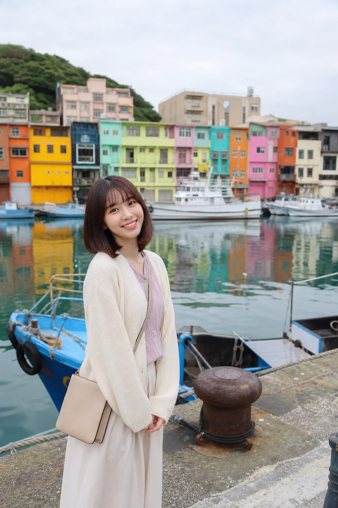

今天來正濱漁港，彩色小屋排在港邊，真的好像把雨都變可愛了。
基隆的天氣有時候霧霧的，但配上港口、漁船和彩色屋，反而很有生活感。沿著岸邊慢慢走，拍照很好看，也很適合買杯咖啡坐一下。
如果想找一個不會太趕的基隆景點，正濱漁港很剛好。今天的小旅行心得是：可愛的顏色真的會讓普通的一天變得亮一點。
Keelung / 正濱漁港
今天來正濱漁港，彩色小屋排在港邊，真的好像把雨都變可愛了。 基隆的天氣有時候霧霧的，但配上港口、漁船和彩色屋，反而很有生活感。沿著岸邊慢慢走，拍照很好看，也...

今天來正濱漁港，彩色小屋排在港邊，真的好像把雨都變可愛了。
基隆的天氣有時候霧霧的，但配上港口、漁船和彩色屋，反而很有生活感。沿著岸邊慢慢走，拍照很好看，也很適合買杯咖啡坐一下。
如果想找一個不會太趕的基隆景點，正濱漁港很剛好。今天的小旅行心得是：可愛的顏色真的會讓普通的一天變得亮一點。